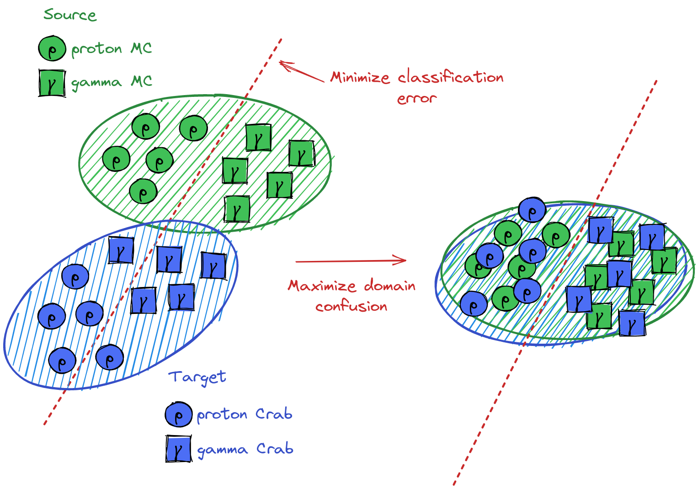

Deep Unsupervised Domain Adaptation for the Cherenkov Telescope Array
Deep learning thesis applied to astrophysics (GammaLearn)
| Author | Under the supervision of |
| Michaël Dell'aiera | Thomas Vuillaume (LAPP) Alexandre Benoit (LISTIC) |
 michael.dellaiera@lapp.in2p3.fr
michael.dellaiera@lapp.in2p3.fr
Presentation outline
- Contextualisation, principle of detection, workflow
- Deep Learning applied to CTA, preceding results
- Domain adaptation applied to CTA, preliminary results !
- Conclusion, perspectives
Gamma-ray astronomy
Study of the **high-energy gamma sources** in the Universe. Inverse problem resolution : Given the telescope observations, how to recover the Energy, Direction and Type of the incoming particle ? - Single telescope analysis (LST-1, CTA project) - Particle classification : Gamma or Proton (maybe Electron ?)


Principle of detection

Workflow Hillas+RF

Workflow γ-PhysNet

γ-PhysNet

Domain adaptation
Set of algorithms and techniques which aims to reduce domain discrepancies.
Expectations : - Better significance - Robustly minimised discrepancies between MC and real data - Improved spectrum reconstruction - More detections at lower energies

γ-PhysNet + DANN

γ-PhysNet + DANN

γ-PhysNet + DANN

γ-PhysNet + DeepJDOT

γ-PhysNet + DeepJDOT

γ-PhysNet + DeepJDOT

Conclusion & Perspectives
Acknowledgments